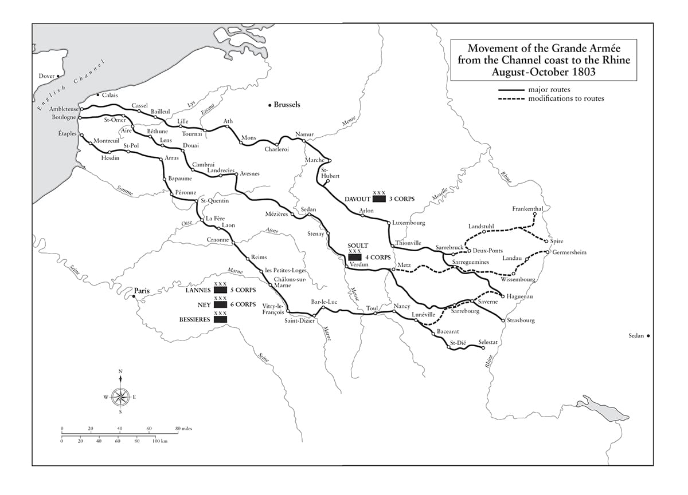
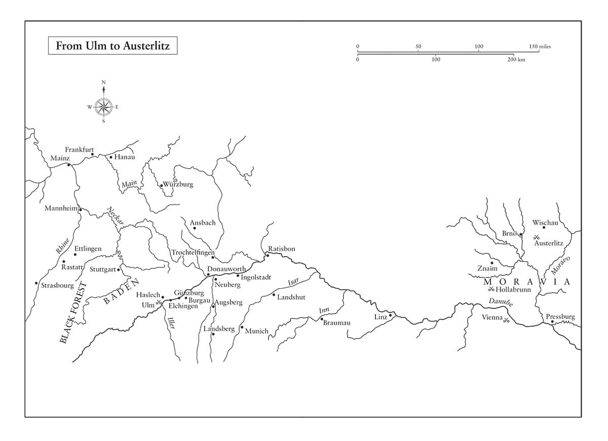
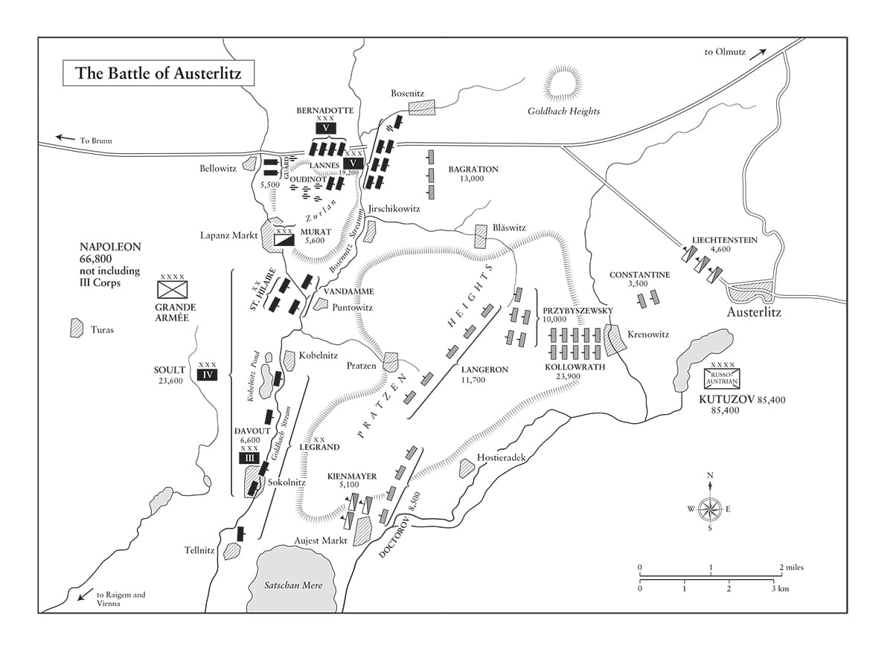

Có một khoảnh khắc trong chiến đấu khi một động thái nhỏ nhất mang tính quyết định và đem tới ưu thế; đó là giọt nước bắt đầu gây tràn bờ.
• Napoleon nói về Caesar trong trận Munda
Với chính mình, tôi chỉ có một đòi hỏi, đó là thành công.
• Napoleon viết cho Decrès, tháng Tám năm 1805
⚝ ✽ ⚝
Ít ngày sau lễ đăng quang, các đại tá quân đội đổ về Paris để nhận những quân hiệu mang hình đại bàng từ Hoàng đế trong một buổi lễ tại Champ de Mars. “Hỡi binh lính!” ông nói với họ, “đây là màu cờ sắc áo của các bạn! Những con đại bàng này sẽ luôn là điểm tập hợp của các bạn… Các bạn có thể hy sinh tính mạng của mình để bảo vệ chúng không?” “Chúng thần thề!” họ đồng thanh trả lời. Được đúc từ sáu miếng đồng thau gắn lại với nhau rồi sau đó mạ vàng, mỗi con đại bàng cao 20,3 cm tính từ đỉnh đầu xuống móng chân, rộng 24,1 cm giữa hai đầu mút cánh, và nặng 1,6 kg.(*) Chúng được gắn trên một cán gỗ sồi màu xanh lơ mang quân kỳ của trung đoàn, và vai trò của người mang đại bàng được đánh giá rất cao, cho dù với phong cách bất kính quen thuộc của lính tráng thì những quân hiệu này chẳng mấy chốc được đặt biệt danh là “những con chim cu”. Trong bản thông cáo 55 của Đại quân năm 1807, Napoleon tuyên bố: “Việc làm mất một con đại bàng là sự xúc phạm tới danh dự trung đoàn mà không chiến thắng hay vinh quang nào giành được trên cả trăm chiến trường có thể bù đắp.
Quá trình huấn luyện tiếp tục tại các doanh trại nằm trải dài theo bờ eo biển để sẵn sàng cho cuộc tấn công Anh. “Chúng tôi diễn tập ở quy mô sư đoàn ba lần một tuần, và hai lần một tháng với ba sư đoàn kết hợp”, Marmont báo cáo Napoleon từ doanh trại Utrecht. “Binh lính trở nên rất thành thục”. Napoleon ra lệnh cho ông này,
⚝ ✽ ⚝
•••
Tháng Mười hai năm 1804, William Pitt ký kết một liên minh với Thụy Điển; ngay sau khi Anh ký Hiệp ước St Petersburg với Nga vào tháng Tư năm 1805, nòng cốt của Liên minh Thứ ba đã hiện hữu. Anh phải trả cho Nga 1,25 triệu bảng bằng tiền guinea vàng cho mỗi 100.000 quân mà nước này tung ra trận chống lại Pháp. Áo và Bồ Đào Nha gia nhập liên minh muộn hơn. Napoleon sử dụng triệt để khả năng đe dọa ngoại giao của mình để cố gắng ngăn các quốc gia khác gia nhập Liên minh. Ngay từ ngày 2 tháng Một, ông đã viết cho Maria Carolina, đương kim Hoàng hậu của vương quốc hợp nhất giữa Naples và Sicily, là em gái của Marie Antoinette và cô ruột của Hoàng đế Francis. Ông cảnh báo bà ta thẳng thừng: “Ta có trong tay mình một số lá thư do chính Lệnh bà viết, cho phép không còn chút nghi ngờ nào về ý định bí mật của Lệnh bà” về việc gia nhập Liên minh đang manh nha. “Lệnh bà đã từng mất vương quốc của mình, và hai lần là do một cuộc chiến đe dọa hủy hoại hoàn toàn triều đại của dòng dõi cha Lệnh bà”, ông viết, ám chỉ tới việc Naples ủng hộ hai liên minh chống Pháp trước đó. “Vậy Lệnh bà có mong muốn có nguyên do cho một lần thứ ba?” Napoleon tiên đoán rằng nếu chiến tranh bùng nổ lần nữa bởi bà ta, “Lệnh bà và các con của mình” – Hoàng hậu và chồng, Vua Ferdinand IV, có tổng cộng 18 đứa con, một con số phi thường – “sẽ không còn trị vì nữa, và những đứa con lang bạt của Lệnh bà sẽ phải đi hành khất qua các quốc gia khác nhau ở châu Âu”. Ông yêu cầu bà ta bãi chức Thủ tướng (kiêm tình nhân) của mình, Huân tước John Acton vốn là một người Anh, và đồng thời trục xuất Đại sứ Anh, triệu hồi Đại sứ Naples từ St Petersburg về và giải tán dân binh. Cho dù bà ta không làm bất cứ việc nào trong những việc kể trên, nhưng Vương quốc Hai Sicily(*) quả thực có ký một hiệp ước trung lập tuyệt đối với Pháp vào ngày 22 tháng Chín năm 1805.
Napoleon không có kỳ nghỉ nào sau lễ đăng quang của mình; thậm chí cả vào ngày Giáng sinh ông vẫn ra lệnh không nên truy bắt một người Anh có tên Gold vì tội đã quyết đấu với một chủ sòng bạc ở Verdun, vì “một tù binh chiến tranh đã cam kết danh dự có thể quyết đấu”. Muộn hơn trong tháng Một, ông viết thư cho Quốc vương Thổ, sử dụng cách xưng hô thân mật dùng đại từ nhân xưng ngôi thứ hai “anh” trong cả lá thư, phù hợp với các bậc quân chủ ngang hàng nhau: “Hậu duệ của những người Ottoman vĩ đại, hoàng đế của một trong những vương quốc lớn nhất trên thế giới”, ông hỏi, “ngài đã thôi trị vì rồi sao? Vì sao ngài lại cho phép người Nga áp đặt mình?” (Đã có những rắc rối với các tổng trấn thân Nga tại Moldavia và Wallachia thuộc Thổ.) Ông cảnh báo rằng đạo quân Nga ở Corfu với sự hỗ trợ của Hy Lạp, sẽ “một ngày nào đó tấn công thủ đô của ngài… Triều đại của ngài sẽ rơi vào bóng đêm của quên lãng… Ngài hãy đứng lên, Selim!” Shah Fat’h Ali của Ba Tư cũng nhận được một lá thư viết bằng thứ ngôn ngữ hoa mỹ Napoleon thường dùng để giao tiếp với các quân chủ phương Đông kể từ chiến dịch Ai Cập: “Danh tiếng, điều loan báo mọi thứ, hẳn đã cho ngài biết ta là ai và ta đã làm gì; làm thế nào ta đã nâng Pháp lên trên tất cả các nước phương Tây, và ta đã bày tỏ mối quan tâm của mình với những vị vua của phương Đông theo cách đáng ngạc nhiên ra sao”. Sau khi nhắc tới vài vị vua Ba Tư vĩ đại trong quá khứ, Napoleon viết về Anh: “Giống như họ, ngài sẽ không tin tưởng những lời khuyên từ một quốc gia của những chủ cửa hàng, những kẻ ở Ấn Độ đã buôn bán tính mạng và vương miện của các quân chủ; và ngài sẽ đem lòng quả cảm của dân tộc mình chống lại sự xâm phạm của người Nga”.(*) Nếu như Pitt đang tìm cách mua chuộc các đồng minh nhằm nỗ lực loại trừ nguy cơ một cuộc tấn công đối với Anh, thì Napoleon lại đang hy vọng phỉnh phờ họ ít nhất giữ thế trung lập. Vào tháng Tư năm 1805, Napoleon viết thư cho Vua Phổ, nói rằng ông không mấy hy vọng giữ được hòa bình với Nga, và quy trách nhiệm cho Sa hoàng: “Tính cách của Hoàng đế Alexander quá thiếu kiên định và yếu ớt để chúng ta có thể trông đợi một cách có lý bất cứ điều gì tốt lành cho nền hòa bình nói chung.”
Pitt đã đặt tiền lệ cho việc tài trợ những kẻ thù của Pháp ngay từ năm 1793, khi ông ta bắt đầu thuê lính của các ông hoàng Đức để chiến đấu tại Vùng đất Thấp, song thường phải thất vọng sâu sắc với các khoản đầu tư của mình, trong khi người Phổ có vẻ hào hứng với việc đánh người Ba Lan hơn là người Pháp vào năm 1795, hay việc Áo chiếm lãnh thổ Venice tại Campo Formio năm 1797 để đổi lấy Bỉ (và hòa bình). Tuy nhiên, nhìn chung, chính sách tài trợ được các chính phủ Anh kế tiếp nhau nhìn nhận là xứng đáng với cái giá bỏ ra. Napoleon đương nhiên khái quát hóa chuyện này thành việc Anh sẵn sàng chiến đấu đến giọt máu cuối cùng của các đồng minh của họ. “Làm ơn cho vẽ các bức biếm họa”, Napoleon ra lệnh cho Fouché vào tháng Năm năm 1805, về “một người Anh cầm túi tiền trên tay, đang đề nghị các cường quốc khác lấy tiền của mình, v.v”. Năm 1794, các khoản chi trả cho các đồng minh lên tới 14% thu nhập của Chính phủ Anh; 20 năm sau, khi đạo quân của Wellington thực sự đương đầu với Pháp, tỉ lệ này vẫn là 14%, cho dù kinh tế Anh đã phát triển đáng kể trong quãng thời gian đó, và khoản tiền này giờ lên tới 10 triệu bảng, một con số khổng lồ. Là người thừa kế các món nợ của Cách mạng Pháp, Napoleon đang chiến đấu chống lại một chính quyền được trợ lực nhờ những lợi ích do Cách mạng Công nghiệp đem lại, và chính quyền này sẵn sàng chia sẻ nguồn lợi ấy để hỗ trợ cho công cuộc của mình. Cho dù con số tổng cộng 65.830.228 bảng trả cho các kẻ thù của Pháp từ năm 1793 đến 1815 là khổng lồ, nhưng nó vẫn ít hơn đáng kể so với chi phí để duy trì, rồi sau đó tung ra trận, một đạo quân thường trực đông đảo.
•••
Ngày 1 tháng Hai năm 1805, Nam tước Louis de Bausset-Roquefort được chỉ định làm Tổng quản cung điện. Cương vị này bao gồm việc đích thân hầu cận Napoleon cùng Chánh Thị thần Duroc, người bạn thân nhất của Napoleon. Như một người biết rõ về ông vào cuối đời ông nhận xét, “ngoại trừ tham vọng của Napoleon mà vì nó mọi thứ khác đều bị hy sinh, bị can thiệp, ông ấy cũng giàu cảm xúc và tình cảm, và có thể có sự gắn bó chặt chẽ”. Tình bạn chân thực ở đỉnh cao quyền lực có tiếng là khó duy trì, và khi thời gian trôi qua và cái chết trên chiến trường cướp đi bốn người bạn thân nhất của ông, ngày càng có ít hơn những người đủ gần gũi Napoleon để nói với ông những điều ông không muốn nghe. Bausset, dù là một triều thần hơn là một người bạn, trải qua nhiều thời gian bên Napoleon hầu như hơn bất cứ ai khác ngoài gia đình ông, và phụng sự ông trung thành cho tới tháng Tư năm 1814, tháp tùng ông trong hầu hết các chuyến thị sát và chiến dịch. Nếu người nào đó có thể được coi là biết ông một cách tường tận, thì đó là Bausset, cuốn hồi ký của ông ta được xuất bản sáu năm sau khi Napoleon qua đời, trong khi những cuốn sách ủng hộ Bonaparte bị ngăn cản ngặt nghèo. Thêm nữa, về chính trị Bausset là một người bảo hoàng, và không được nhắc đến trong di chúc của Napoleon, không giống như hàng chục người khác. Song dẫu vậy ông ta vẫn không có gì ngoài sự ngưỡng mộ. “Thiên tài và sức mạnh biểu lộ trên vầng trán cao rộng của ông ấy”, Bausset viết. “Ngọn lửa cháy sáng từ đôi mắt ông ấy thể hiện mọi ý nghĩ và cảm xúc của ông ấy. Nhưng khi sự bình yên trong tâm trạng của ông ấy không bị quấy rầy, nụ cười dễ mến nhất làm bừng sáng khuôn mặt cao quý của ông ấy, và đem đến sự cuốn hút không thể cắt nghĩa được mà tôi chưa bao giờ thấy ở bất cứ ai khác. Vào những lúc này, không thể thấy ông ấy mà không yêu mến ông ấy”. Sức cuốn hút của Napoleon với Bausset không hề giảm đi trong hơn một thập kỷ ông ta sống và làm việc bên cạnh ông, phục vụ đồ ăn, quản lý gia nhân và để ông ăn gian khi chơi cờ với mình. Ông ta thuật lại rằng “cách cư xử và phong thái của ông ấy vẫn luôn như thế; chúng tự nhiên và không giả tạo. Ông ấy là người duy nhất trên thế giới mà có thể nói không chút xu nịnh rằng càng nhìn gần, ông ấy lại càng có vẻ vĩ đại hơn.”
•••
Napoleon chấp nhận vương miện của vương quốc Italy mới được thành lập trong một buổi lễ long trọng diễn ra tại căn phòng đặt ngai vàng ở Tuileries vào Chủ nhật 17 tháng Ba năm 1805. Từng là Đại pháp quan của Cộng hòa Italy nên cũng là hợp lẽ khi ông trở thành Vua Italy sau khi đã được lập làm Hoàng đế Pháp. Viết thư cho Hoàng đế Francis, ông quy nguyên nhân quyết định của mình cho Anh và Nga, lập luận rằng trong khi các nước này còn chiếm đóng Malta và Corfu, việc tách biệt các vương miện của Pháp và Italy là chuyện hão huyền. Hai ngày sau, ông phong em gái Elisa của mình cùng chồng cô này, Felice Baciocchi, lên nắm quyền cai quản Lucca và Piombino.(*)
Trên đường tới Milan để đăng quang ngôi vua Italy, Napoleon trải qua sáu ngày tại Lyon, nơi ông ngủ với vợ của một nhà tài chính giàu có, Françoise-Marie de Pellapra (nhũ danh LeRoy), bất chấp thực tế là Josephine đang tháp tùng ông trong chuyến đi.(*) Lễ đăng quang tại nhà thờ Chính tòa lộng lẫy của Milan ngày 26 tháng Năm được cử hành với sự hiện diện của Hồng y Caprara, bảy hồng y khác và ước tính chừng 30.000 người. “Nhà thờ rất đẹp”, Napoleon viết thư cho Cambacérès. “Buổi lễ diễn ra tốt đẹp như buổi lễ tại Paris, với điểm khác biệt là thời tiết thật tuyệt vời. Khi cầm lấy Vương miện Sắt và đặt nó lên đầu mình, tôi đã nói thêm những từ này: ‘Chúa ban nó cho ta; bất cứ kẻ nào chạm vào nó hãy coi chừng.’ Tôi hy vọng đó sẽ là một lời tiên tri”. Vương miện Sắt của Lombardy, một chiếc đai nặng trịch bằng vàng hình ô-van chứa kim loại được cho là lấy từ một trong những chiếc đinh trên Thập tự Thiêng, đã được mỗi hoàng đế của Đế chế La Mã Thần thánh đội kể từ Frederick Barbarossa năm 1155. Cho nên việc Napoleon sử dụng nó là thêm một lời đe dọa nữa nhắm tới người đang tại vị – Hoàng đế Áo Francis.
Napoleon tới thăm Marengo vào dịp kỷ niệm lần thứ năm ngày diễn ra trận đánh, mặc một bộ quân phục mà Bausset nhớ lại là “đã sờn, và một số chỗ bị rách. Ông ấy cầm trên tay một chiếc mũ rộng cũ kỹ viền kim tuyến đầy những lỗ thủng”. Đó là bộ quân phục ông đã mặc trong trận đánh, và cho dù những cái lỗ đó có phải do đạn bắn hay không, chúng cũng gợi nhắc tới thiên tài của Napoleon trong quan hệ với công chúng. Ông trải qua tháng tiếp theo tại Brescia, Verona, Mantua, Bologna, Modena, Piacenza, Geneva, và Turin, trước khi trở lại cung điện Fontainebleau – một dinh thự đi săn trước đây của nhà Bourbon mà Napoleon ưa thích ghé thăm – vào tối 11 tháng Bảy, chỉ 85 tiếng sau khi rời Turin cách đó gần 530 km. Đó cũng là lần cuối cùng Napoleon đặt chân lên Italy. Ông chỉ định người con riêng 23 tuổi Eugène của vợ làm Phó vương Italy, và tính cách nhân hậu điềm đạm đã giúp anh ta trở nên tương đối được yêu mến trong những người dân thường Italy. Trong ba ngày tháng Sáu năm đó, Napoleon đã gửi cho Eugène không ít hơn 16 lá thư về nghệ thuật cai trị – “Biết lắng nghe, và biết chắc rằng im lặng thường đem lại hiệu quả như hiểu biết”, “Đừng đỏ mặt khi đưa ra các câu hỏi”, “Trên mọi vị trí ngoài vị trí Phó vương Italy, hãy tự hào là người Pháp, song ở đây con cần ít thể hiện ra điều đó” – cho dù việc điều hành đất nước này hằng ngày tiếp tục được đảm nhiệm bởi Melzi, cựu Phó Tổng thống của Cộng hòa Italy, người mà Napoleon đã từ chối không cho rút lui bất chấp những lời phàn nàn bất tận về bệnh gút của ông ta. Melzi không gặp chút khó khăn nào trong việc tìm ra những người Italy tài năng để điều hành chính quyền, những người tin vào cách quản lý hành chính hiện đại của Pháp. Joseph và Louis tất nhiên cảm thấy buồn phiền trước sự thăng tiến của Eugène, cho dù một trong hai người đã có thể trở thành Vua Italy nếu sẵn lòng từ chối quyền thừa kế ngôi báu ở Pháp của mình.
Hệ thống lục địa của ta đã được quyết định”, Napoleon nói với Talleyrand vào tháng Sáu năm 1805. “Ta không muốn vượt sông Rhine hay Adige; ta muốn sống trong hòa bình, song ta sẽ không cho phép bất cứ sự gây hấn xấu xa nào”. Cho dù Napoleon không có tham vọng lãnh thổ vượt quá Italy và sông Rhine, nhưng ông quả thực có trông đợi Pháp tiếp tục là quốc gia vĩ đại nhất trong số các cường quốc châu Âu và phán xử cả những vấn đề bên ngoài biên giới của mình, sẵn sàng đối đầu với bất cứ quốc gia hay nhóm quốc gia nào muốn “gây hấn.
Vào đầu mùa hè, có vẻ như cuối cùng ít nhất ông cũng đã có thể giành được thế thượng phong chống lại quốc gia kiên quyết thách thức tầm nhìn về châu Âu của ông đến thế. Ngày 30 tháng Ba, tận dụng một cơn bão đánh dạt hạm đội phong tỏa của Nelson khỏi vị trí ngoài khơi Toulon, Đô đốc Villeneuve đã thoát ra khơi và đi qua eo biển Gibralta, hội quân với một hạm đội Tây Ban Nha từ Cadiz và hướng tới Martinique, tới nơi ngày 14 tháng Năm. Ngay khi Nelson hiểu ra Villeneuve không hướng về Ai Cập, ông ta liền vượt Đại Tây Dương truy đuổi, tới Tây Ấn vào ngày 4 tháng Sáu. Phần tiếp theo trong kế hoạch lớn tấn công Anh của Napoleon đã được thực hiện. “Chúng ta chỉ cần làm chủ mặt biển trong sáu tiếng thôi”, Napoleon viết cho Decrès ngày 9 tháng Sáu, “và Anh quốc sẽ không còn tồn tại nữa. Chẳng có một ngư dân, một nhà báo mạt hạng, một bà nội trợ nào lại không biết là không thể ngăn cản được một hải đội nhẹ xuất hiện trước Boulogne”. Trên thực tế, Hải quân Hoàng gia Anh luôn có ý định ngăn cản một hải đội ở bất cứ quy mô nào xuất hiện tại Boulogne hay xâm nhập bất kỳ cảng nào. Song giờ đây với Villeneuve đã vượt qua Đại Tây Dương và đang hy vọng phá vỡ vòng phong tỏa ở Brest, đến giữa tháng Bảy Napoleon tin tưởng rằng cuộc tấn công đã chờ đợi từ lâu cuối cùng có thể được tiến hành. “Đưa mọi thứ lên thuyền, vì thời cơ có thể xuất hiện bất cứ lúc nào”, ông ra lệnh cho Berthier ngày 20, “để trong 24 tiếng toàn bộ lực lượng viễn chinh có thể xuất phát… Ý định của ta là đổ bộ tại bốn điểm khác nhau, và nằm gần nhau… Hãy báo cho bốn thống chế [Ney, Davout, Soult và Lannes] là không được để lỡ một giây nào”. Ông cũng ra lệnh rằng những lá thư gửi về từ Italy không cần phải tiệt trùng bằng giấm trong một ngày trước khi gửi tiếp đi nữa: “Nếu dịch bệnh tới từ Italy, nó sẽ tới qua những người lữ hành và việc chuyển quân. Chuyện này chỉ đơn giản là phiền toái.”
Ngày 23 tháng Bảy, sau khi mất hai tàu trong trận đánh giữa sương mù tại Mũi Finisterre với hạm đội nhỏ hơn của Chuẩn đô đốc-Huân tước Robert Calder, Villeneuve tuân lệnh Napoleon giương buồm tới Ferrol gần Corunna ở phía bắc Tây Ban Nha, do đó đánh mất lợi thế cốt tử về thời gian ông ta đã giành được trong chuyến hải hành vượt Đại Tây Dương. Trên đảo Elba, Napoleon chê bai Calder vì đã không tấn công vào ngày thứ hai của cuộc hải chiến, qua đó cho phép Villeneuve thoát đi. Người Anh đối thoại với ông chỉ ra rằng Calder bị ngược gió, và vì thế không thể tấn công, nhưng điều này bị Napoleon bác bỏ rằng nó “chỉ là một cái cớ, được đưa ra vì niềm tự hào dân tộc, vì Đô đốc đã chạy thoát trong đêm ngày 23”. Với việc không thể đánh giá được sự khác biệt giữa vị trí ngược gió và thuận gió, Napoleon một lần nữa chứng tỏ khiếm khuyết lớn trong hiểu biết hàng hải của mình.
Dưới sự thúc giục không ngừng từ Napoleon – “Châu Âu đang nín thở chờ đợi biến cố lớn lao đang được chuẩn bị” – Villeneuve ra khơi từ Ferrol với 33 chiến hạm chủ lực vào ngày 10 tháng Tám, hy vọng hội quân với Ganteaume tại Brest với 21 tàu, mà khi cộng với hải đội của Hạm trưởng Zacharie Allemand tại Rochefort, sẽ đem đến cho Hạm đội Liên hợp không ít hơn 59 chiến hạm chủ lực. Nhưng hôm sau, sợ rằng Hải quân Hoàng gia Anh đang lần theo sự di chuyển của mình, thay vì đi lên phía bắc tới eo biển, Villeneuve lại dong buồm xuống phía nam tới Cadiz, nơi ông ta thả neo ngày 20 tháng Tám và không lâu sau đó bị Nelson, người đã hối hả vượt Đại Tây Dương quay lại và tìm ra đối thủ theo bản năng, phong tỏa.
•••
Napoleon không hề biết Áo đã bí mật gia nhập Liên minh Thứ ba vào ngày 9 tháng Tám do phẫn nộ trước lễ đăng quang ở Italy, cũng như với việc sáp nhập Genoa và những liên minh Napoleon đã ký kết với Bavaria, Württemberg, và Baden. Cho dù Napoleon đã nói riêng với Talleyrand ngày 3 tháng Tám rằng “chẳng có ý nghĩa gì cả trong một cuộc chiến tranh”, nhưng ông đã sẵn sàng nếu nó nổ ra. Trong mấy ngày đầu tháng Tám, ông lệnh cho Saint-Cyr sẵn sàng tấn công Naples từ phía bắc Italy nếu cần, giao cho Masséna nắm quyền chỉ huy ở Italy và phái Savary tới Frankfurt để tìm những tấm bản đồ Đức tốt nhất sẵn có và cố gắng do thám Hội đồng Triều đình ở Vienna.
Thứ ba 13 tháng Tám là một ngày rất bận rộn với Napoleon. Lúc 4 giờ sáng, tin về trận Mũi Finisterre được mang tới cho ông ở Pont-de-Briques. Tổng quản hoàng gia của đế chế, Pierre Daru, được triệu tới và sau này thuật lại rằng Hoàng đế “trông hoàn toàn cuồng loạn, mũ của ông ấy bị kéo sụp xuống tận mắt, và toàn bộ vẻ bề ngoài của ông ấy thật khủng khiếp”. Đoan chắc rằng Villeneuve sẽ bị phong tỏa tại Ferrol – cho dù vào thời điểm đó kỳ thực vị đô đốc đã rời khỏi đó – Napoleon thốt lên: “Một hải quân thế đấy! Một đô đốc thế đấy! Biết bao hy sinh vô ích!” Với những tin tức riêng rẽ cho biết người Áo có vẻ đang huy động quân đội, đã rõ ràng là cuộc tấn công Anh sẽ phải bị đình chỉ. “Bất cứ ai cũng phải thật điên rồ mới đi gây chiến với ta”, ông viết cho Cambacérès. “Chắc chắn ở châu Âu không thể có quân đội nào khá hơn quân đội ta có trong tay hiện nay”. Song khi tình hình đã rõ ràng sau đó trong ngày rằng Áo quả thực đang huy động, ông trở nên kiên quyết. “Ta đã quyết định”, ông viết cho Talleyrand. “Ta muốn tấn công Áo, và có mặt ở Vienna trước tháng Mười một để đối mặt với người Nga, nếu họ xuất hiện”. Trong cùng lá thư, ông lệnh cho Talleyrand tìm cách hù dọa “cái bộ xương Francis này, được đặt lên ngai vàng chỉ nhờ giá trị của tổ tiên y”, đến chỗ không chiến đấu nữa, vì “ta muốn được yên để tiến hành cuộc chiến tranh với Anh”. Ông chỉ thị cho Talleyrand nói với Đại sứ Áo ở Paris, vốn là em họ của Bộ trưởng Ngoại giao Ludwig von Cobenzl, “Như vậy, ông de Cobenzl, vậy là ông muốn chiến tranh chứ gì! Trong trường hợp đó ông sẽ có nó, và Hoàng đế không phải là người khởi xướng nó”. Không rõ liệu Talleyrand có thành công trong việc hăm dọa Áo hay không, Napoleon tiếp tục thúc giục Villeneuve – người mà ông mô tả với Decrès là “một tạo vật khốn khổ, người nhìn một thành hai, và có nhiều sự am hiểu hơn là lòng can đảm” – giương buồm tiến về phía bắc, viết rằng: “Nếu ông có thể xuất hiện ở đây trong ba ngày, hay thậm chí 24 tiếng, coi như ông hoàn thành sứ mệnh của mình… Để giúp cho cuộc tấn công vào sức mạnh đã o ép Pháp trong sáu thế kỷ, tất cả chúng ta có thể chết mà không tiếc gì tính mạng.”
Cho dù Napoleon vẫn không muốn từ bỏ kế hoạch tấn công Anh của mình, nhưng ông nhận thức được là sẽ không khôn ngoan khi cố chiến đấu đồng thời trên hai mặt trận. Giờ đây ông cần một kế hoạch chi tiết để nghiền nát Áo. Ông lệnh cho Daru ngồi xuống để viết theo lời đọc. “Không hề có sự chuyển tiếp”, Daru sau này kể với Ségur,
⚝ ✽ ⚝
Daru không khỏi ngưỡng mộ trước “quyết tâm rõ ràng và mau lẹ của Napoleon trong chuyện từ bỏ những việc chuẩn bị đồ sộ như vậy mà không hề do dự.”
•••
Hệ thống lưu trữ tài liệu chi tiết của Berthier (có thể chở gọn trên một cỗ xe ngựa) là một trong những cột trụ mà chiến dịch sắp diễn ra dựa vào; cột trụ khác là việc Napoleon áp dụng hệ thống quân đoàn – về căn bản là một phiên bản mở rộng quy mô đáng kể của hệ thống sư đoàn ông đã sử dụng khi chiến đấu ở Italy và Trung Đông. Thời gian trải qua tại doanh trại ở Boulogne và liên tục diễn tập từ năm 1803 đến 1805 đã cho phép Napoleon chia quân đội của mình thành những đơn vị gồm từ 20.000 đến 30.000 quân, đôi khi lên tới 40.000, và huấn luyện họ với cường độ cao. Mỗi quân đoàn thực sự là một quân đội thu nhỏ, với lực lượng bộ binh, kỵ binh, pháo binh, ban tham mưu, quân báo, công binh, vận tải, hậu cần, tài chính, quân y, và quân nhu riêng của mình, được thiết lập để hoạt động trong mối liên hệ chặt chẽ với các quân đoàn khác. Di chuyển cách nhau ở khoảng cách trong vòng một ngày hành quân, các quân đoàn cho phép Napoleon chuyển đổi tức thì giữa tiền quân, hậu quân hay dự bị tùy thuộc vào di chuyển của kẻ thù. Như thế, dù trong tấn công hay rút lui, cả đạo quân có thể xoay quanh trục của mình mà không bị rối loạn. Các quân đoàn cũng có thể hành quân cách nhau đủ xa để không gây ra khó khăn trong cung cấp lương thực ở vùng nông thôn.
Mỗi quân đoàn cần đủ lớn để kìm chân toàn bộ đạo quân địch ở một vị trí trên chiến trường, trong khi các quân đoàn khác sẽ tới tăng viện và giải nguy cho nó trong vòng 24 tiếng, hoặc hữu ích hơn, tạt sườn hay thậm chí là hợp vây quân địch. Các tư lệnh quân đoàn – thường là các thống chế – sẽ được ấn định cho một vị trí để tới và một ngày tháng để có mặt tại đó, và phải tự làm mọi việc còn lại. Chưa bao giờ chỉ huy một đại đội, tiểu đoàn, trung đoàn, lữ đoàn, sư đoàn, quân đoàn bộ binh hoặc kỵ binh trong chiến đấu, và tin tưởng vào kinh nghiệm cũng như năng lực của các thống chế dưới quyền mình, Napoleon nói chung thường để họ quán xuyến các vấn đề hậu cần và chiến thuật trên chiến trường, chừng nào họ đem lại điều ông đòi hỏi. Các quân đoàn cũng cần phải có khả năng thực hiện những cuộc thâm nhập đáng kể vào lực lượng địch trong tấn công.
Đây là một hệ thống học hỏi từ những người đi trước, nguyên là sáng tạo của Guibert và Thống chế de Saxe. Napoleon sử dụng nó hầu như trong tất cả những chiến thắng sau này của ông – đáng kể nhất là ở Ulms, Jena, Friedland, Lützen, Bautzen, và Dresden – vì ông không muốn lại phải trải qua nỗi nguy kịch ở Marengo, khi lực lượng của mình bị dàn trải quá rộng. Những thất bại của ông – nhất là tại Aspern-Essling, Leipzig, và Waterloo – đều xảy ra khi ông không thể sử dụng hệ thống quân đoàn một cách hợp lý.
“Trong các cuộc chiến thời Cách mạng, kế hoạch là dàn ra, đưa các cánh quân sang phải và trái”, Napoleon nói nhiều năm sau này, “điều đó chẳng đem lại ích lợi gì. Nói thật với quý vị, điều đã giúp ta thắng nhiều trận đến thế là vào buổi tối trước một trận đánh, thay vì ra lệnh mở rộng các chiến tuyến của mình, ta đã cố hội tụ tất cả lực lượng của mình vào điểm ta muốn tấn công. Ta tập trung họ ở đó”. Napoleon đi tiên phong trước một bước về tác chiến nằm giữa chiến lược và chiến thuật. Các quân đoàn của ông đến năm 1812 đã trở thành đơn vị tiêu chuẩn được mọi quân đội châu Âu áp dụng, và điều này kéo dài tới năm 1945. Đó là cống hiến độc nhất vô nhị của ông cho nghệ thuật chiến tranh, lần đầu tiên được sử dụng vào năm 1805 và có thể được coi như báo hiệu sự ra đời của chiến tranh hiện đại.
•••
“Áo có vẻ muốn chiến tranh”, Napoleon viết cho đồng minh của mình, Tuyển hầu Maximilian-Joseph xứ Bavaria, ngày 25 tháng Tám. “Ta không thể lý giải được cách xử sự thất thường như vậy; tuy nhiên, Áo sẽ có nó, và sớm hơn nước này trông đợi”. Hôm sau, ông nhận được xác nhận từ Louis-Guillaume Otto, khi đó là phái viên Pháp tại Munich, rằng người Áo sắp sửa vượt sông Inn và tấn công Bavaria. Để đối phó với viễn cảnh này, một số đơn vị Pháp của lực lượng giờ đây được chính thức đổi tên là Đại quân đã rời Boulogne trong khoảng từ 23 đến 25 tháng Tám. Napoleon gọi đây là “thế xoay tròn” của mình, và sau cùng đã nói với ban tham mưu về kế hoạch tấn công Anh: “Được lắm, nếu chúng ta phải từ bỏ nó, chúng ta bằng bất cứ giá nào cũng sẽ nghe lễ cầu kinh nửa đêm tại Vienna”. Doanh trại Boulogne phải tới năm 1813 mới bị dỡ bỏ.
Để giữ Phổ đứng ngoài Liên minh, ông yêu cầu Talleyrand hãy đề nghị cho nước này Hanover, “song cần phải hiểu rằng đây là một đề nghị ta sẽ không đưa ra lại sau nửa tháng nữa”. Người Phổ tuyên bố trung lập, song vẫn nhất quyết đòi độc lập cho Thụy Sĩ và Hà Lan. Ngay cả khi đang chuẩn bị cho chiến tranh – gửi ba lá thư cho Berthier trong ngày 31 tháng Tám, cho Bessières, Cambacérès, và Gaudin mỗi người hai lá, và cho Decrès, Eugène, Fouché, và Barbé-Marbois mỗi người một lá – Napoleon còn ra sắc lệnh rằng “Đua ngựa sẽ được tổ chức tại các tỉnh của Đế chế nổi tiếng nhất về những giống ngựa họ nuôi dưỡng; giải thưởng sẽ được trao cho những con ngựa nhanh nhất”. Tất nhiên có cả mục đích quân sự trong chuyện này, song nó cho thấy sự phong phú trong suy nghĩ của ông ngay cả, hay có lẽ đặc biệt, trong thời điểm kịch tính. Trong cùng tháng, ông cũng tuyên bố rằng khiêu vũ gần các nhà thờ không nên bị cấm, vì “Nhảy múa không phải tội lỗi… Nếu tin vào mọi thứ các giám mục nói, vậy thì vũ hội, kịch, thời trang sẽ phải bị cấm và Đế chế trở thành một tu viện khổng lồ.”
Đến ngày 1 tháng Chín, khi Napoleon rời Pont-de-Briques tới Paris để yêu cầu Thượng viện cho gọi 80.000 lính quân dịch mới, ông nói với Cambacérès, “ở Boulogne sẽ không có thừa lấy một mống ngoài lực lượng cần thiết để bảo vệ cảng”. Ông cho phong tỏa hoàn toàn tin tức về việc chuyển quân, bảo Fouché cấm tất cả báo chí “không được nhắc tới quân đội, như thể nó không còn tồn tại nữa”. Ông còn đi tới một ý tưởng nhằm theo dõi việc huy động quân của kẻ thù, lệnh cho Berthier tìm một người nói tiếng Đức “để theo dõi diễn biến của các trung đoàn Áo, và phân loại thông tin vào các ngăn của một chiếc hộp được chế tạo đặc biệt… Tên hoặc số hiệu của mỗi trung đoàn được ghi lên một tấm thẻ, và các tấm thẻ được chuyển từ ngăn này sang ngăn khác tùy theo sự di chuyển của các trung đoàn.”
Ngày hôm sau, Tướng Áo Karl Mack von Leiberich vượt biên giới Bavaria và nhanh chóng chiếm thành phố Ulm có công sự phòng thủ, chờ đợi sự tăng viện nhanh chóng sau đó bởi lực lượng Nga dưới quyền Tướng Mikhail Kutuzov, đưa lực lượng Liên minh lên tổng cộng 200.000 người tại chiến trường này. Song Ulm lại nằm quá xa về phía trước nên gây nguy hiểm cho người Áo nếu tới đó mà không có liên hệ trực tiếp từ trước với người Nga, những người mà do một số lý do – công tác tham mưu được cho là tồi, rồi sự lệch nhau 11 ngày giữa lịch Julian của Nga và lịch Gregory ở phần còn lại của châu Âu – đã triển khai rất chậm trễ. Trong khi đó, Đại Công tước Charles chuẩn bị tấn công tại Italy, nơi Napoleon đã thay thế Jourdan bằng Masséna. Sau khi đã cảnh báo Eugène và các chỉ huy quân đội của ông ta về cuộc tấn công của người Áo vào ngày 10 tháng Chín, Napoleon dành thời gian hôm đó để chỉ thị cho Quận trưởng 53 tuổi Pierre Forfait của Genoa dừng việc đưa cô nhân tình trẻ của ông này – “Một cô gái Rome mà chẳng qua chỉ là một ả điếm” – tới nhà hát.

Bảy quân đoàn của Đại quân, dưới quyền các Thống chế Bernadotte, Murat, Davout, Ney, Lannes, Marmont, và Soult, tổng cộng trên 170.000 người, gấp rút tiến về phía đông với tốc độ kinh ngạc, vượt sông Rhine ngày 25 tháng Chín. Binh lính phấn khởi vì được chiến đấu trên đất liền chứ không phải mạo hiểm vượt eo biển Anh trên những chiếc thuyền đáy bằng mong manh, và hành quân đầy vui vẻ, hát “Khúc hát lên đường” (Việc một bán lữ đoàn thuộc lòng tới 80 bài hát là chuyện không hiếm gặp; cũng như việc các nhạc công vừa cổ vũ tinh thần trên đường hành quân và trước lúc tấn công, vừa kiêm luôn vai trò người khiêng cáng và nhân viên quân y trong chiến đấu.) “Cuối cùng thì mọi thứ cũng trở nên sáng sủa”, Napoleon viết cho Otto ngày hôm đó. Đây là chiến dịch đơn lẻ lớn nhất quân Pháp từng thực hiện. Tới từ Boulogne, Hà Lan và những nơi khác, mặt trận trải dài ra trên 320 km, từ Coblenz ở phía bắc đến Freiburg ở phía nam.
Hôm trước ngày Đại quân tới sông Rhine, một tin đồn lan ra ở Paris rằng Napoleon đã lấy toàn bộ dự trữ vàng và bạc của Ngân hàng Pháp để chi trả cho chiến dịch, và hệ quả là không còn đủ để đảm bảo cho lượng tiền giấy lưu hành. (Dù trên thực tế không hề có chút vàng nào bị lấy ra, Ngân hàng đã lưu hành 75 triệu franc tiền giấy mà chỉ có 30 triệu franc bảo đảm.) Ngân hàng bị đám đông bao vây, những người này ban đầu được trả tiền một cách chậm chạp, rồi ngừng hoàn toàn việc trả tiền, và sau đó trả rất chậm ở mức 90 centime cho mỗi franc. Napoleon ý thức được rất rõ cuộc khủng hoảng, trong đó cảnh sát đã phải xuất hiện để giải tán đám đông hoảng loạn đang lo sợ một sự trở lại thời của những tờ tín phiếu vô giá trị. Ông cảm thấy các chủ ngân hàng Paris đang không thể hiện đủ niềm tin vào Pháp, và thấy rằng một chiến thắng nhanh chóng và một nền hòa bình có lợi là quan trọng hơn bao giờ hết.
Napoleon rời Saint-Cloud ngày 24 tháng Chín và hội quân tại Strasbourg hai ngày sau, ông để Josephine lại đây và tiến về phía sông Danube ở phía đông Ulm nhằm cố gắng bao vây Mack và cắt rời ông ta khỏi quân Nga. Tướng George Mouton được phái tới gặp Tuyển hầu Württemberg, đưa ra yêu cầu khó có thể bị từ chối là cho quân đoàn 30.000 người của Ney đi qua lãnh thổ, và khi Tuyển hầu đòi Württemberg phải được nâng lên thành vương quốc, Napoleon liền phá lên cười: “A, điều này rất hợp với ý ta; cứ để ông ta làm vua, nếu đó là tất cả những gì ông ta muốn!”
Hệ thống quân đoàn cho phép Napoleon quay toàn bộ đạo quân của mình 90 độ về bên phải sau khi vượt sông Rhine. Sự di chuyển này được Ségur mô tả như là “sự thay đổi mặt trận lớn nhất từng được biết tới”, và có nghĩa là vào ngày 6 tháng Mười, Đại quân đang chiếm lĩnh một chiến tuyến hướng xuống phía nam, toàn bộ từ Ulm tới tận Ingolstadt trên bờ sông Danube. Sự bố trí nhanh nhẹn một đạo quân rất lớn như vậy chắn ngang đường rút lui của Mack thậm chí trước cả khi ông ta biết chuyện gì đang xảy ra, không bị mất lấy một người lính, ghi dấu như một trong những thành tựu quân sự ấn tượng nhất của Napoleon. “Không có bất kỳ căn cứ nào để thương lượng với người Áo”, lúc đó ông nói với Bernadotte, “ngoại trừ bằng hỏa lực đại bác”. Ông càng thêm phấn chấn trước thực tế là các đạo quân từ Baden, Bavaria, và Württemberg lúc này đều đã tới hội cùng Đại quân.
Nhiều năm sau chiến dịch, người làm đồ chơi của Napoleon đã chế ra một cỗ xe thu nhỏ có thắng bốn chú chuột để mua vui cho vài đứa trẻ đang sống cùng Hoàng đế. Khi chiếc xe không nhúc nhích, Napoleon bảo lũ trẻ “hãy cấu đuôi hai con đi đầu, và khi chúng bắt đầu chạy những con khác sẽ theo sau”. Trong suốt cuối tháng Chín và đầu tháng Mười, ông đã “cấu đuôi” Bernadotte và Marmont, thúc đẩy họ tiến tới Stuttgart và xa hơn nữa, với Bernadotte hành quân qua các lãnh thổ Ansbach và Bayreuth thuộc Phổ, khiến Berlin nổi cơn phẫn nộ riêng tư mà không đưa ra phản ứng công khai nào. “Ta đang có mặt tại triều đình Württemberg, và cho dù đang tiến hành chiến tranh, vẫn được nghe vài bản nhạc rất hay”, Napoleon viết cho Bộ trưởng Nội vụ của mình là Champagny từ Ludwigsburg vào ngày 4 tháng Mười, bình luận về vở nhạc kịch “vô cùng tuyệt vời” Don Juan của Mozart. “Tuy nhiên, cách hát của người Đức dường như ít nhiều mang phong cách baroque”. Với Josephine, ông nói thêm rằng thời tiết rất tuyệt và nữ Tuyển hầu xinh đẹp “có vẻ rất dễ mến”, dù là con gái của George III.
Vào tối 6 tháng Mười, Napoleon hối hả đi tiếp tới Donauwörth, theo lời Ségur “với sự nóng lòng muốn thấy sông Danube lần đầu tiên”. Từ “nóng lòng” thường xuyên tái xuất hiện trong lời kể của Ségur, và gần như có thể coi là nét tính cách thường trực nhất trong mọi nét tính cách về quân sự của Napoleon. Tất cả những người thân cận nhất với ông trong chiến dịch này – Berthier, Mortier, Duroc, Caulaincourt, Rapp, và Ségur – đều nhắc tới tâm trạng nôn nóng cực độ của ông trong suốt quá trình, kể cả khi các kế hoạch của ông đi trước lịch trình.
Napoleon viết bản thông cáo đầu tiên trong số 37 bản thông cáo khi ông vẫn còn ở Bamberg và tiên đoán về “sự hủy diệt hoàn toàn” của kẻ thù. “Đại tá Maupetit, chỉ huy Trung đoàn long kỵ 9, đã tấn công vào làng Wertingen”, ông viết trong thông cáo về cuộc giao chiến mà tại đó Murat và Lannes đã đánh bại một lực lượng Áo vào ngày 8 tháng Mười; “bị tử thương, những lời cuối cùng của ông ấy là: ‘Hãy báo với Hoàng đế rằng Trung đoàn long kỵ 9 đã thể hiện họ xứng đáng với danh tiếng của mình, và rằng họ đã xung phong và chiến thắng trong tiếng hô Hoàng đế vạn tuế!’” Các bản thông cáo của Napoleon đều gây phấn khích khi đọc, ngay cả khi hư cấu. Ông dùng chúng để thông báo cho quân đội về những cuộc họp mình đã chủ trì, các thành phố được trang hoàng ra sao, và kể cả về “vẻ đẹp khác thường” của Phu nhân de Montgelas, vợ Thủ tướng Bavaria.
Ngày 9 tháng Mười, quân Pháp giành chiến thắng trong một cuộc giao chiến nhỏ tại Günzburg, rồi sau đó lại thắng tại Haslach-Jungingen vào ngày 11. Đến 11 giờ đêm hôm sau, sau khi Bernadotte đã chiếm Munich, và một tiếng trước khi Napoleon rời Brugau trên bờ sông Iller, ông đã nói với Josephine, “Kẻ thù bị đánh bại, hắn đã mất trí, và mọi thứ cho thấy đây là chiến dịch hạnh phúc nhất của anh, ngắn nhất, chói lọi nhất từng diễn ra”. Tất nhiên, nói như thế là quá ngạo mạn, song những lời của ông rốt cuộc đã được chứng tỏ là đúng. Để động viên Mack không rút lui khỏi vị trí đầy rủi ro của mình, tình báo Pháp đã bố trí những “kẻ đào ngũ” để cho bị bắt, họ sẽ nói với quân Áo rằng quân Pháp sẵn sàng binh biến và quay về Pháp, và thậm chí còn nói là có tin đồn về một cuộc đảo chính tại Paris.
Cuộc vây hãm Ulm của ông đã gần hoàn tất, ngày 13 tháng Mười, Napoleon ra lệnh cho Ney vượt sông Danube trở lại và chiếm cao nguyên Elchingen, chướng ngại đáng kể cuối cùng trước Ulm: từ tu viện Elchingen có thể phóng tầm mắt tuyệt vời qua vùng đồng bằng ngập nước cho tới tận nhà thờ Chính tòa Ulm cách đó gần 10 km. Ney chiếm được cao nguyên vào hôm sau. Nếu quan sát các sườn dốc của Elchingen, nơi những khinh binh, lính xạ thủ và lính thủ pháo đã phải leo lên để chiếm tu viện, người ta có thể đánh giá được tầm quan trọng của nhuệ khí và tinh thần đồng đội cao độ mà Napoleon đã ra sức thấm nhuần vào binh lính của mình. Trong trận chiến, một lính thủ pháo từng tham gia Đạo quân Ai Cập bị thương vào lưng đã hô lớn trong mưa như trút “Xung phong!”, vậy là Napoleon, nhận ra người lính này, liền cởi áo khoác của mình và quàng lên anh ta, rồi nói: “Hãy cố gắng mang trả cái áo này cho ta, và để đổi lại ta sẽ phong thưởng và trợ cấp cho ngươi vì ngươi rất xứng đáng”. Tại trận chiến hôm đó, Napoleon đã ở trong tầm súng ngắn của lính long kỵ Áo.
Tối hôm ấy, một sĩ quan phụ tá làm món trứng ốp-lết cho Napoleon, song không thể tìm thấy chút rượu vang hay quần áo khô nào, trước chuyện này Hoàng đế nhận xét một cách đùa bỡn rằng xưa nay ông chưa bao giờ ra trận mà không có chai Chambertin của mình, “ngay cả giữa sa mạc Ai Cập”. “Ngày hôm nay thật kinh khủng”, ông viết về việc chiếm Elchingen, “binh lính ngập trong bùn tới tận đầu gối”. Song giờ ông đã vây chặt Ulm.
Ngày 16 tháng Mười, Ségur tìm thấy Napoleon trong một trang trại ở xóm Haslach gần Ulm, “ngủ gà gật bên cạnh một cái bếp lò, trong khi cậu lính đánh trống trẻ cũng đang ngủ gà gật ở mé bên kia”. Đôi khi những giấc chợp mắt của Napoleon chỉ kéo dài có mươi phút, nhưng chúng sẽ giúp ông tỉnh táo trở lại trong nhiều giờ. Ségur nhớ lại sự không tương thích của việc thấy “Hoàng đế và cậu lính đánh trống ngủ ngay cạnh nhau, xung quanh là các tướng lĩnh và quan chức cao cấp đang đứng trong lúc chờ lệnh”. Hôm sau, Mack bắt đầu thương lượng với một lời hứa sẽ đầu hàng nếu ông ta không được quân Nga giải vây trong vòng 21 ngày. Napoleon, lúc này đã bắt đầu cạn lương thực và không muốn để mất động lực, cho ông ta tối đa sáu ngày. Khi Murat đánh bại một nỗ lực giải vây của Thống chế Werneck và bắt 15.000 tù binh tại Trochtelfingen ngày 18 tháng Mười, tin này như một cú đấm thôi sơn vào mỏ ác khiến Mack “buộc phải đứng tựa vào tường của căn phòng”. Napoleon viết cho Josephine từ Elchingen hôm sau để nói rằng “Tám ngày liên tục ướt sũng đến tận da với đôi bàn chân lạnh buốt đã làm anh hơi mệt mỏi, song cả ngày hôm nay anh không ra ngoài và được nghỉ ngơi”. Trong một bản thông cáo, ông tuyên bố đã không tháo ủng ra khỏi chân trong hơn một tuần liền.
Mack đầu hàng tại Ulm vào lúc 3 giờ chiều 20 tháng Mười, cùng với khoảng 20.000 bộ binh, 3.300 kỵ binh, 59 pháo đã chiến, 300 xe vũ khí đạn dược, 3.000 ngựa, 17 tướng và 40 lá quân kỳ. Khi một sĩ quan Pháp không nhận ra nên đã hỏi ông ta là ai, viên tư lệnh Áo trả lời: “Ông đang thấy trước mặt mình Mack không may!” Biệt danh này đã gắn liền với ông ta. “Anh đã thực hiện mọi kế hoạch của mình; anh đã tiêu diệt đạo quân Áo đơn giản bằng các cuộc hành quân”, Napoleon viết cho Josephine, trước khi tuyên bố sai sự thật, “anh đã bắt được 60.000 tù binh, 120 khẩu pháo, hơn 90 lá quân kỳ, và hơn 30 tướng”. Trong bản thông cáo thứ 7 của mình, ông viết “không đến 20.000 người thoát được trong số 100.000 người của đạo quân đó”, thêm một sự phóng đại nữa dù có tính gộp mọi cuộc giao chiến kể từ Günzburg.
Lễ đầu hàng diễn ra trên cao nguyên Michelsberg bên ngoài Ulm. Từ tháp Aussichtsturm ngay bên ngoài khu Thành phố cổ, người ta có thể thấy địa điểm (ngày nay một phần đã thành rừng) nơi đạo quân Áo xếp hàng rời khỏi thành phố và giao nộp súng hỏa mai cùng lưỡi lê trước khi trở thành tù khổ sai tại các trang trại ở Pháp và các dự án xây dựng ở Paris. Khi một sĩ quan Áo nhận xét về bộ quân phục lấm bùn của Napoleon, rằng một chiến dịch trong thời tiết ẩm ướt mới vất vả làm sao, Napoleon đã nói: “Chủ nhân của anh muốn nhắc nhở ta rằng ta là một người lính. Ta hy vọng ông ấy sẽ thấy tấm áo choàng hoàng đế đã không làm ta quên mất nghề nghiệp đầu tiên của mình”. Nói với các tướng lĩnh Áo bị bắt, ông thêm: “Thật không may khi một dân tộc can đảm như các vị, với tên tuổi luôn được nhắc đến đầy trân trọng ở bất cứ nơi nào các vị chiến đấu, lại là nạn nhân của sự ngu ngốc của một chính quyền chỉ mơ tới những dự định điên rồ, và không hề đỏ mặt khi bán rẻ phẩm giá của quốc gia”. Ông cố gắng thuyết phục họ rằng chiến tranh là hoàn toàn không cần thiết, chỉ đơn thuần là kết quả của việc Anh mua chuộc Vienna để bảo vệ London khỏi bị đánh chiếm. Trong một bản Nhật lệnh, Napoleon mô tả người Nga và người Áo chỉ đơn thuần là những “mignon” của người Anh (có nghĩa là “đồ chơi” hay “cún cưng”, mặc dù từ này cũng bao hàm cả ý nghĩa tính dục, dùng để nói về một thanh niên đồng tính).
Rapp nhớ lại rằng Napoleon “vô cùng phấn khởi trước thành công của mình” – như ông có mọi lý do để cảm thấy, vì chiến dịch đã diễn ra hoàn hảo và gần như không có đổ máu. “Hoàng đế đã phát minh ra một phương pháp mới để tiến hành chiến tranh”, Napoleon dẫn lời binh lính của mình trong một bản thông cáo; “ngài chỉ dùng tới đôi chân và lưỡi lê của chúng ta.”
•••
Với sự lựa chọn thời điểm gần như thi vị – cho dù Napoleon phải bốn tuần sau mới biết tin – Liên minh đã giáng đòn báo thù Pháp ngay hôm sau. Ở ngoài khơi mũi Trafalgar, 80 km về phía tây Cadiz, hạm đội Pháp – Tây Ban Nha của Villeneuve với 33 chiến hạm chủ lực đã bị 27 chiến hạm chủ lực của Đô đốc Nelson tiêu diệt, với tổng cộng 22 chiến hạm Pháp và Tây Ban Nha bị mất, trong khi người Anh không mất tàu nào.(*) Thể hiện điều sau này được biết đến như “dấu ấn Nelson” về sự chỉ huy cực kỳ hiệu quả, vị đô đốc Anh đã tách hạm đội của mình thành hai hải đội cùng tấn công theo phương vuông góc với đội hình hàng ngang của Hạm đội Liên hợp, và qua đó chia cắt họ thành ba nhóm chiến hạm, trước khi tiêu diệt từng tàu một của hai nhóm trong ba nhóm này. Khi Đại quân đang có mặt bên sông Danube, việc Villeneuve giao chiến là hoàn toàn không cần thiết – cho dù ông ta có thắng, thì Anh giờ đây cũng không thể bị tấn công ít nhất là trong một năm nữa – nhưng những mệnh lệnh nhất quyết yêu cầu giao chiến của Napoleon đã trực tiếp dẫn tới thảm họa.(*) Trận đánh đã đem lại ưu thế tuyệt đối về hải quân cho Anh trong hơn một thế kỷ. Như triết gia Bertrand de Jouvenel nói, “Napoleon là bá chủ ở châu Âu, nhưng ông ấy cũng là tù nhân ở đó”. Sự bù đắp nhỏ duy nhất cho Napoleon là cái chết của Nelson trong trận đánh. “Những gì Nelson có, ông ta đã không phải học hỏi”, Napoleon sau này nói trên đảo St Helena. “Đó là một món quà của Tạo hóa”. Chiến thắng ở Trafalgar cho phép Anh thúc đẩy cuộc chiến tranh kinh tế chống lại Pháp, và tới tháng Năm năm 1806, Chính phủ Anh thông qua một Mệnh lệnh của Hội đồng – về căn bản là một sắc lệnh – áp đặt việc phong tỏa toàn bộ bờ biển châu Âu từ Brest tới sông Elbe.
Giờ đây thay vì hoàn toàn từ bỏ giấc mơ xâm lăng của mình, Napoleon tiếp tục bỏ ra rất nhiều tiền, thời gian và sức lực để cố gắng xây dựng lại một hạm đội mà ông tin có thể lại đe dọa Anh dựa vào số lượng thuần túy. Ông không bao giờ hiểu được rằng một hạm đội có đến bảy phần tám thời gian tại cảng đơn giản không thể có năng lực hàng hải để đối đầu với Hải quân Hoàng gia Anh đang ở đỉnh cao về năng lực tác chiến. Trong khi một người lính quân dịch trong Đại quân có thể – thực tế thường là vậy – được huấn luyện qua diễn tập đội ngũ và bắn súng hỏa mai trên đường hành quân ra trận, thì không thể dạy thủy thủ trên đất liền cách xử trí việc dây buồm bị mất trong một cơn bão, hay bắn nhiều hơn một loạt pháo mạn giữa biển cả tròng trành vào một đối thủ đã được huấn luyện để bắn hai hay thậm chí ba loạt trong cùng khoảng thời gian. Việc làm chủ chiến tranh trên đất liền của Napoleon đã bị đối trọng một cách hoàn hảo bởi việc làm chủ của người Anh trên biển, như các biến cố xảy ra mùa thu năm 1805 đã chứng tỏ.
•••
Hiện không còn gì ngăn cản Đại quân trước khi nó tới được Vienna. Dẫu vậy chiến dịch còn lâu mới kết thúc, vì Napoleon phải ngăn chặn đạo quân Nga 100.000 người của Kutuzov đang tiến về phía tây khỏi hội quân với đạo quân Áo gồm 90.000 người dưới quyền Đại Công tước Charles khi đó đang ở Italy. Hy vọng của Napoleon về chuyện Charles có thể bị ngăn cản trong việc bảo vệ Vienna đã trở thành hiện thực, khi Masséna ngăn được quân Áo rút lui trong trận Caldiero ác liệt diễn ra ba ngày cuối tháng Mười.
“Anh đang trong cuộc hành quân lớn”, Napoleon viết cho Josephine từ Haag am Hausruck vào ngày 3 tháng Mười một. “Thời tiết rất lạnh; vùng đồng quê ngập dưới tuyết vài chục phân… Thật may là không thiếu củi; nơi đây quân ta luôn ở giữa rừng”. Điều mà ông không thể biết, là cũng vào hôm ấy, Phổ đã ký Hiệp ước Potsdam với Áo và Nga, cam kết “can thiệp” quân sự chống lại Pháp khi nhận được tài trợ của Anh. Hiếm khi nào một hiệp ước, được phê chuẩn ngày 15 tháng Mười một, lại bị các biến cố làm cho trở nên vô hiệu nhanh tới vậy. Frederick William III của Phổ sẵn sàng gây sức ép với Pháp khi các tuyến giao thông của Pháp bị trải dài, song ông ta không đủ tự tin để tấn công, và không thể lấy được Hanover từ Anh như cái giá cho chuyện “can thiệp” của mình.
Napoleon hành quân về phía Vienna. Các trục trặc về hậu cần gặp phải đã dẫn tới những lời phàn nàn từ binh lính và từ cả các sĩ quan cao cấp như Tướng Pierre Macon, song ông vẫn thúc giục quân đội tiến về phía trước, và đưa ra “những mệnh lệnh nghiêm khắc nhất” vào ngày 7 tháng Mười một nhằm chống lại việc cướp bóc, với hàng trăm người bị trừng phạt ở Braunau và những nơi khác, phải nộp lại những gì đã cướp bóc, và thậm chí bị đồng đội đánh roi (điều rất hiếm gặp trong quân đội Pháp). “Chúng ta hiện giờ đang ở đất nước của rượu vang!” có thể ông đã nói như thế với quân đội đến từ Melk vào ngày 10 tháng Mười một, nhưng họ chỉ được phép uống những gì đã được các sĩ quan hậu cần trưng thu về. Bản thông cáo kết thúc với lời đả kích giờ đây đã trở nên quen thuộc nhắm vào người Anh, “những tác giả tạo nên bất hạnh của châu Âu.”
Vào 11 giờ sáng 13 tháng Mười một, người Pháp đã chiếm được cây cầu then chốt Tabor bắc qua sông Danube gần như chỉ bằng lời đe dọa, với việc loan đi tin tức sai bét rằng hòa bình đã được ký kết và Vienna được tuyên bố là thành phố mở. Pháo binh và bộ binh Áo dưới quyền Thống chế-Vương hầu von Auersperg đã sẵn sàng chiến đấu, còn thuốc nổ đã được đặt để làm nổ tung cầu, nhưng Murat cùng các sĩ quan khác đã che chắn cho hai tiểu đoàn lính thủ pháo của Oudinot tiếp cận cầu để “ném chất cháy xuống sông, đổ nước vào thuốc súng, và cắt các dây ngòi”; có giai thoại kể rằng một lính thủ pháo giật một que diêm đã châm từ một lính Áo. Khi sự thật được phát giác thì đã quá muộn, khiến Murat phải ra lệnh ép quân Áo triệt thoái khỏi khu vực này. Vậy là một mưu mẹo chiến tranh đã chuyển giao Vienna vào tay người Pháp, trong khi Bộ Chỉ huy tối cao Áo không có kế hoạch chống trả gì nhiều ngoài việc phá các cây cầu. Khi Napoleon nghe tin, ông “không kìm nổi niềm vui mừng”, nhanh chóng xông tới chiếm cung điện Schönbrunn của nhà Habsburg, ngủ lại đó trong cùng buổi tối, và tiến vào Vienna đầy phô trương cùng quân đội của mình vào hôm sau, khi Francis cùng triều đình của ông ta rút về phía đông, nơi những người Nga đang tới. Cuộc khải hoàn chỉ bị tan vỡ khi Murat để một đạo quân Áo thoát khỏi bị bắt sống tại Hollabrünn vào ngày 15 tháng Mười một.
Hăng hái muốn nhanh chóng tiến lên để giành lấy chiến thắng quyết định ông cần, Napoleon rời Schönbrunn ngày 16 “trong cơn giận dữ” với Murat. Ông cũng không vui vẻ hơn với Bernadotte, người mà ông đề cập trong thư gửi Joseph: “Ông ta làm ta mất một ngày và vận mệnh thế giới phụ thuộc vào một ngày ấy; đáng lẽ ta đã không để một kẻ nào chạy thoát”. Ông có mặt ở Znaïm ngày 17 khi biết tin về Trafalgar. Ông ra lệnh kiểm duyệt triệt để tới mức phần lớn người Pháp chỉ tới năm 1814 mới biết đến thảm họa này lần đầu tiên.
Sự cần thiết phải bố trí quân đồn trú tại các thành phố vừa chiếm được và bảo vệ các tuyến đường tiếp tế đồng nghĩa với việc Napoleon bị giảm xuống còn 78.000 quân trên chiến trường vào cuối tháng Mười một, khi ông hành quân thêm 320 km nữa về phía đông để tiếp cận kẻ thù. Với người Phổ đang thể hiện một thái độ đe dọa ở phía bắc, các Đại Công tước Johann và Charles đang hành quân tới từ phía nam, và Kutuzov vẫn còn đang ở đằng trước ông về phía đông tại Moravia, Đại quân dường như bắt đầu ở vào tình thế rất sơ hở. Binh lính đã hành quân một cách vững chắc trong ba tháng và hiện đang đói và mệt. Đại úy Jean-Roch Coignet thuộc Cận vệ Đế chế ước tính mình đã hành quân 1.120 km trong sáu tuần. Tại một trong những điều khoản của hiệp ước hòa bình sau này, Napoleon đã yêu cầu cung cấp da đóng giày như một phần của bồi thường chiến tranh.
Napoleon “ngạc nhiên và vui vẻ” trước việc Brünn (nay là Brno) đầu hàng ngày 20 tháng Mười một, nơi này đầy ắp vũ khí và lương thực, là nơi ông thiết lập căn cứ tiếp theo của mình. Hôm sau, ông dừng lại cách thành phố 16 km về phía đông, tại “một gò đất nhỏ bên rìa đường” tên là Santon, cách không xa làng Austerlitz (nay là Slavkov), và ra lệnh đào sâu thêm khu đất thấp về phía kẻ thù để tăng độ dốc của nó. Sau đó, ông cưỡi ngựa đi khắp khu vực, cẩn thận ghi nhận vị trí hai hồ nước lớn và những vùng trống trải, “dừng lại vài lần tại những nơi nhô cao hơn”, nhất là cao nguyên được biết đến dưới tên gọi điểm cao Pratzen, trước khi tuyên bố với ban tham mưu của mình: “Quý vị, hãy xem xét khu vực này thật cẩn thận. Nó sẽ trở thành một chiến địa, và quý vị sẽ dự phần cuộc chơi tại đó!” Phiên bản của Thiébault đưa ra: “Hãy nhìn kỹ những điểm cao kia: quý vị sẽ chiến đấu ở đấy trong gần hai tháng nữa”. Chuyến trinh sát đó còn đưa ông tới các làng Grzikowitz, Puntowitz, Kobelnitz, Sokolnitz, Tellnitz, và Mönitz, Napoleon nói với những người đi cùng: “Nếu ta mong muốn chặn bước chân kẻ thù, thì đây là nơi ta cần bố trí; nhưng như thế ta sẽ chỉ có một trận đánh bình thường. Mặt khác, nếu ta bỏ cánh phải, rút nó về phía Brno, [kể cả] khi địch có tới 300.000 người, thì chúng chắc chắn sẽ bị ‘tóm sống’ và thua vô phương cứu vãn”. Như vậy, ngay từ đầu, Napoleon đã lên kế hoạch cho một trận đánh hủy diệt.

Người Nga và người Áo đã phát triển một kế hoạch để tìm cách bẫy Napoleon kẹt giữa họ. Đạo quân chủ lực trên chiến trường, có cả hai hoàng đế đi cùng, sẽ hành quân về phía tây từ Olmütz với lực lượng tổng cộng 86.000 quân, trong khi Đại Công tước Ferdinand sẽ tấn công theo hướng nam từ Prague vào sau lưng để hở của Napoleon. Napoleon ở lại Brno tới tận ngày 28 tháng Mười một, cho phép quân đội được nghỉ ngơi đôi chút. “Mỗi ngày lại tăng thêm mối nguy hiểm từ vị trí cô lập và xa xôi của chúng tôi”, Ségur nhớ lại, và Napoleon quyết định sử dụng thực tế đó thành có lợi cho mình. Trong cuộc gặp của ông tại Brno với hai phái viên Áo, Bá tước Johann von Stadion và Tướng Giulay, ngày 27 tháng Mười một, ông vờ tỏ vẻ lo ngại về vị trí của mình và thế yếu nói chung, ra lệnh cho các đơn vị rút lui trước mặt người Áo, hy vọng tạo ra sự tự tin thái quá cho kẻ địch. “Người Nga tin rằng người Pháp không dám đánh một trận”, Tướng Thiébault viết về mưu mẹo này.
⚝ ✽ ⚝
Napoleon tỏ ra cứng rắn hơn với phái viên của Frederick William, Bá tước Christian von Haugwitz, vào hôm sau, từ chối bất cứ khái niệm “hòa giải” nào, trước khi rời đi lúc giữa trưa để tới một trạm bưu điện kiêm nhà trọ phục vụ xe trạm tại Posorsitz, vùng Stara Posta.
Biết được từ một kẻ đào ngũ rằng lực lượng Liên minh chắc chắn sẽ tấn công, và từ đội quân tình báo của Savary rằng đối phương sẽ không chờ 14.000 quân Nga tăng viện, Napoleon liền tập trung lực lượng của mình lại. Với Marmont ở Graz, Mortier ở Vienna, Bernadotte ở hậu quân giám sát Bohemia, Davout di chuyển về phía Pressburg để giám sát Hungary cho tới lúc này vẫn yên tĩnh, còn Lannes, Murat, và Soult dàn ra phía trước ông trên trục Brno-Wischau-Austerlitz, Napoleon cần phải tập trung tất cả các quân đoàn của mình lại cho trận đánh. Ông gặp viên sĩ quan phụ tá trẻ tuổi kiêu ngạo của Sa hoàng Alexander là Vương hầu Peter Petrovich Dolgoruky 27 tuổi trên đường đi Olmütz ở ngoại ô Posorsitz vào ngày 28 tháng Mười một. “Tôi đã có một cuộc trò chuyện với nhóc con bắng nhắng này”, Napoleon kể với Tuyển hầu Frederick II của Württemberg sau đó một tuần, “trong câu chuyện, hắn nói với tôi như thể đang nói với một boyar(*) sắp bị hắn đày đi Siberia vậy”. Dolgoruky yêu cầu Napoleon giao lại Italy cho Vua của Sardinia, Bỉ và Hà Lan cho một ông hoàng Phổ hay Anh. Napoleon lạnh nhạt trả lời anh ta một cách phù hợp, song không để anh ta đi cho tới khi anh ta có cơ hội để ý thấy những gì giống như sự chuẩn bị cho một cuộc rút lui.
Một lính canh thuộc Trung đoàn khinh binh 17 đã nghe lỏm được những đòi hỏi của Vương hầu. “Ngươi biết đấy, những kẻ này nghĩ chúng sắp sửa nuốt chửng chúng ta!” Napoleon nói với người lính, và anh này đáp lại, “Cứ để chúng thử; chúng ta sẽ sớm làm chúng chết nghẹn!” Câu nói này đem đến cho Napoleon một tâm trạng thoải mái hơn. Các lần trao đổi ngắn ngủi nhưng rõ ràng là chân thành này với những người lính thường, điều không thể hình dung ra với phần lớn tướng lĩnh Liên minh, là một phần của những gì tạo nên ảnh hưởng của Napoleon với người dưới quyền. Tối hôm đó, sau khi cho gọi khẩn cấp Bernadotte và Davout, khi nhận được lệnh này Davout đã hành quân 112 km chỉ trong 48 tiếng, Napoleon ngủ tại Stara Posta.
•••
Kế hoạch ban đầu của Napoleon là cho Soult, Lannes, và Murat đánh kiềm chế để nhử lực lượng Áo-Nga gồm 69.500 bộ binh, 16.565 kỵ binh và 247 khẩu pháo nống về phía trước, còn Davout cùng Bernadotte sẽ tới nơi khi quân địch đã tham chiến toàn lực và bộc lộ rõ ràng những điểm yếu của mình. Cho dù Napoleon chỉ có tổng cộng 50.000 bộ binh và 15.000 kỵ binh, nhưng ông có 282 khẩu pháo và đã tìm cách tập trung quân tại Austerlitz nhiều hơn số lượng mà phía Đồng minh – vốn có hoạt động tình báo kém cỏi – biết là ông có. Để làm cho quân địch tin chắc rằng ông sắp sửa rút lui, Soult được lệnh rời bỏ điểm cao Pratzen với dáng vẻ khá vội vã. Bất chấp tên gọi của nó, điểm cao này trên thực tế là những mô nhấp nhô hơn là những bờ dốc như vách núi, và các chỗ trũng trên mặt đất cho phép giấu những nhóm binh lính lớn sát với phần đỉnh bằng phẳng của nó. Một số phần của điểm cao có vẻ dốc một cách giả tạo, và hẳn là còn có vẻ dốc hơn nữa khi tiến lên đồi dưới làn đạn.
Các ngày 29-30 tháng Mười một đều được dùng để kiểm tra lực lượng và trinh sát, thiết lập trận địa phòng ngự tại quả đồi nhỏ Santon ở đầu phía bắc chiến trường với những công sự đắp bằng đất mà ngày nay vẫn có thể nhìn thấy, chờ Davout và Bernadotte tới. “Đóng trại giữa những người lính thủ pháo trong bốn ngày cuối cùng”, Napoleon viết cho Talleyrand lúc 4 giờ chiều 30, “ta chỉ có thể viết trên hai đầu gối, vì thế ta không thể viết gì để gửi Paris; ngoài ra ta rất ổn.”
Phía Đồng minh cũng nhận ra tầm quan trọng của điểm cao Pratzen; kế hoạch của họ, được Tham mưu trưởng Áo là Tướng Franz von Weyrother xây dựng, là để Tướng Friedrich von Buxhöwden giám sát cuộc tấn công của ba (trong năm) cánh quân từ điểm cao vào cánh phải quân Pháp ở phía nam. Những cánh quân này sau đó sẽ ngoặt lên phía bắc và tấn công ngược lên theo chiến tuyến Pháp cùng với toàn bộ đạo quân áp sát. Trên thực địa, điều này đã khiến quá nhiều binh lực tập trung trên địa hình đứt gãy ở phía nam chiến trường, nơi họ có thể bị kìm chân bởi lực lượng Pháp ít hơn, trong khi để ngỏ trung tâm rộng mở cho Napoleon phản công. Sa hoàng Alexander đã phê chuẩn kế hoạch này, cho dù Tư lệnh chiến trường của ông ta, Kutuzov, không đồng ý với nó. Ngược lại, chiến lược của Pháp xuất phát từ một thẩm quyền chỉ huy duy nhất.
Thomas Bugeaud thuộc Cận vệ Đế chế đã viết cho chị gái vào ngày 30 tháng Mười một và kể lại việc chỉ cách kẻ thù trong vòng hơn 3 km “Hoàng đế đã đích thân tới đó và ngủ trong xe của ngài giữa trại của bọn em… Ngài luôn đi bộ qua tất cả các trại, và trò chuyện với binh lính hay các sĩ quan. Bọn em tập hợp quanh ngài. Em đã nghe nhiều những lời ngài nói; chúng rất đơn giản và luôn xoay quanh nhiệm vụ quân sự”. Napoleon hứa với họ, ông sẽ giữ khoảng cách cho đến khi chiến thắng, “nhưng nếu chẳng may các ngươi do dự trong khoảnh khắc, các ngươi sẽ thấy ta lao thẳng tới hàng ngũ của các ngươi để vãn hồi trật tự.”
Ngày 1 tháng Mười hai, Napoleon biết rằng Bernadotte đang ở Brno và sẽ tới nơi vào hôm sau, như vậy giờ đây trận đánh có thể diễn ra. Sau khi ra lệnh cho các tướng vào lúc 6 giờ chiều, ông đọc để người khác ghi lại vài ý tưởng về thành lập trường nội trú Saint-Denis cho con gái các thành viên Binh đoàn Danh dự. Muộn hơn, vào lúc 8:30 tối, ông đọc để người khác ghi lại việc bố trí quân đội cho trận đánh sắp tới, thứ cuối cùng còn lưu lại trong giấy tờ của ông tới khi có bản thông cáo sau trận đánh. Muộn hơn trong tối đó, sau một bữa tối ngoài trời với khoai tây và hành tây rán, ông đi bộ cùng Berthier từ đống lửa trại này tới đống lửa trại khác, trò chuyện với binh lính. “Không có trăng, và bóng tối của buổi đêm bị làn sương mù dày làm tăng thêm, khiến cho việc di chuyển khó khăn”, một trong những người có mặt nhớ lại, cho nên Khinh kỵ Cận vệ cầm theo những cây đuốc được làm từ cành thông và rơm. Khi họ lại gần doanh trại lính, “Trong khoảnh khắc, như thể có phép màu, chúng tôi có thể thấy suốt dọc chiến tuyến của mình là mọi doanh trại được thắp sáng bởi hàng nghìn cây đuốc trên tay những người lính”. Louis-François Lejeune thuộc ban tham mưu của Berthier, người sau này trở thành một trong những họa sĩ vĩ đại nhất vẽ về các cảnh chiến trường thời Napoleon, nói thêm “Chỉ những người hiểu nỗi khó khăn của việc kiếm một ít rơm để làm chỗ ngả lưng trong trại mới có thể đánh giá đúng sự hy sinh của binh sĩ khi đốt tất cả những ổ rơm của mình để soi đường cho vị tướng đang đi”. Những tiếng hoan hô chào đón Napoleon, theo Marbot nghĩ, càng lớn hơn vì điểm may mắn là hôm sau sẽ kỷ niệm tròn một năm lễ đăng quang của ông. Vô vàn cây đuốc được binh lính giơ cao đã bị người Áo hiểu nhầm là ánh lửa đốt doanh trại Pháp trước khi rút lui, một ví dụ kinh điển của sự không thống nhất về nhận thức, theo đó những bằng chứng riêng rẽ bị gán ghép vào một tập hợp những giả định được thiết lập từ trước.
Thiébault nhớ lại một vài câu đùa vào tối hôm đó. Có lúc, Napoleon đã hứa rằng nếu trận đánh diễn biến xấu ông sẽ xuất hiện ở bất cứ nơi nào nguy hiểm nhất, khi đó một người lính thuộc trung đoàn bộ binh 28 lớn tiếng, “Chúng thần hứa là hoàng thượng sẽ chỉ phải chiến đấu bằng đôi mắt vào ngày mai!” Khi ông hỏi các Bán lữ đoàn 46 và 57 rằng liệu việc cung cấp đạn cho họ có đầy đủ không, một người lính đáp, “Không, nhưng người Nga đã dạy chúng thần ở Grisons [một bang ở Thụy Sĩ] rằng với họ chỉ cần đến lưỡi lê thôi. Chúng thần sẽ cho hoàng thượng thấy vào ngày mai!” Thiébault kể thêm rằng binh lính cũng “nhảy một điệu farandole ”(*) và hô to “Hoàng đế vạn tuế!”
•••
Lúc 4 giờ sáng Thứ hai, 2 tháng Mười hai năm 1805, quân Pháp di chuyển vào vị trí xuất phát của họ trên chiến trường Austerlitz, phần lớn không bị phát hiện vì vùng đất thấp hơn bị bao phủ trong một màn sương mù dày đặc, tiếp tục khiến Bộ Chỉ huy tối cao Đồng minh lúng túng về dự định của Napoleon trong những giờ đầu trận đánh. “Các sư đoàn của ta được lặng lẽ tập hợp trong tranh tối tranh sáng và lạnh buốt”, Thiébault nhớ lại. “Để đánh lạc hướng kẻ thù, họ đốt lên những đống lửa tại nơi họ rời đi.”
Napoleon đã lên đường đi kiểm tra tình hình từ lâu trước giờ ăn sáng, và đến 6 giờ sáng ông cho gọi các Thống chế Murat, Bernadotte, Bessières, Berthier, Lannes, và Soult, cũng như một số tư lệnh sư đoàn trong đó có Tướng Nicolas Oudinot, tới bản doanh dã chiến của ông trên một quả đồi nhỏ nằm về phía trái trung tâm chiến trường có tên là Žuráň, nơi mà sau đó cho ông tầm nhìn tuyệt vời về phía sẽ trở thành trung tâm của trận đánh trên điểm cao Pratzen, nhưng từ đây ông lại không thể trông thấy các làng Sokolnitz Tellnitz mà phần lớn giao chiến xảy ra lúc đầu. Cuộc họp tiếp tục tới 7:30 sáng, khi Napoleon chắc chắn mọi người đều đã hiểu chính xác những gì họ được yêu cầu.
Kế hoạch của Napoleon là để cánh phải của mình yếu nhằm thu hút quân địch tấn công ở phía nam, nhưng vẫn đảm bảo để cánh này được bảo vệ chu đáo nhờ quân đoàn của Davout đang vận động tới, trong khi cánh trái ở phía bắc được giữ bởi bộ binh của Lannes và kỵ binh dự bị của Murat tại Santon, trên đó ông bố trí 18 khẩu pháo. Sư đoàn 3 của Tướng Claude Legrand thuộc quân đoàn Soult sẽ chặn cuộc tấn công của quân Áo ở trung tâm, trong khi quân đoàn của Bernadotte – được chuyển từ Santon tới bố trí lại giữa Grzikowitz và Puntowitz – sẽ hỗ trợ cuộc tấn công chính hôm đó. Đây sẽ là cuộc tấn công của Soult lên điểm cao Pratzen, do các sư đoàn của Saint-Hilaire và Vandamme dẫn đầu, diễn ra ngay khi quân Đồng minh bắt đầu rời khỏi đây để tấn công quân Pháp ở phía nam.
“Quý vị giao chiến”, Napoleon nói về nghệ thuật chiến thuật của mình, “rồi sau đó quý vị chờ đợi và quan sát”. Vậy là ông giữ Cận vệ Đế chế, lực lượng kỵ binh dự bị của Murat và sư đoàn thủ pháo của Oudinot làm đội dự bị với vai trò lực lượng khẩn cấp ở sườn phía nam, hoặc để vây kín quân địch một khi đã chiếm được điểm cao Pratzen. Trong Tàng thư bang Bavaria còn giữ một phác thảo ông đã vẽ để diễn tả đại ý về cách trận đánh đã diễn ra, cho thấy nó đã diễn biến gần với dự định ban đầu của ông một cách đáng chú ý. Cho dù Napoleon liên tục thay đổi kế hoạch tác chiến của mình tùy theo tình hình, nhưng trong một số trường hợp cuộc giao chiến thực sự diễn ra theo kế hoạch, và Austerlitz là một trường hợp như thế.
Ngay sau 7 giờ sáng, thậm chí từ trước khi cuộc họp kết thúc và lực lượng của Soult tập hợp thành đội hình, giao chiến đã bắt đầu quanh Tellnitz khi Legrand bị quân Áo tấn công đúng như dự kiến. Đến 7:30, lực lượng của Soult tập hợp tại Puntowitz để đánh lừa Đồng minh nghĩ rằng họ đang di chuyển sang sườn phải, trong khi trên thực tế họ chuẩn bị tấn công điểm cao Pratzen và đánh xuyên qua trung tâm chiến trường. Đến 8 giờ, quân Nga (lực lượng đảm nhiệm phần lớn việc chiến đấu ngày hôm đó) vận động về phía nam, rời khỏi điểm cao Pratzen hướng tới cánh phải của Pháp, làm trung tâm của Đồng minh suy yếu. Đến 8:30, quân Đồng minh đã chiếm được Tellnitz và Sokolnitz, nhưng tới 8:45, Sokolnitz rơi lại vào tay quân Pháp sau cuộc phản kích của Davout, người chỉ huy một lữ đoàn tại đó. Tiến vào làng, viên thống chế 35 tuổi, người đang đánh một trận lớn đầu tiên của mình, nhận được lời kêu cứu khẩn cấp từ lực lượng phòng thủ tại Tellnitz, nên đã cử em rể là Tướng Louis Friant cùng Trung đoàn bộ binh 108 xung phong vào ngôi làng bị khói bao phủ để chiếm lại nó từ tay quân Nga. Đến lúc này, Sư đoàn 2 thiện chiến của Friant còn lại 3.200 người, bằng một nửa quân số đầy đủ của nó; nhưng cho dù chiến tuyến bị kéo căng ra rất mỏng, Sư đoàn này vẫn không bị vỡ trận. Như vẫn thường diễn ra vào thời đại của thuốc súng, đã xuất hiện những trường hợp “hỏa lực thân thiện” nghiêm trọng, như khi Trung đoàn bộ binh 108 và Trung đoàn khinh binh 26 bắn lẫn nhau bên ngoài Sokolnitz và chỉ ngừng bắn khi nhìn thấy những con đại bàng của nhau.
Legrand giờ đây bảo vệ Sokolnitz với hai bán lữ đoàn, một trong số đó, Bán lữ đoàn Xạ thủ Corse, là một đơn vị toàn người Corse có biệt danh “Những người anh em họ của Hoàng đế”. Ông ta phải chống lại 12 tiểu đoàn bộ binh Nga đang tiến về phía khu trại gà có tường bao nằm ngay bên ngoài làng, nơi chỉ có bốn tiểu đoàn Pháp phòng thủ. Trong cuộc giao chiến, Trung đoàn khinh binh 26 được tung vào Sokolnitz và khiến năm tiểu đoàn Nga tháo chạy, cùng lúc Bán lữ đoàn 48 của Friant đẩy lùi 4.700 quân Nga. Tuy nhiên, đến 9:30, quân Nga đã công kích lâu đài Sokolnitz trong một cuộc tổng tấn công; trong số 12 sĩ quan chỉ huy Pháp cao cấp nhất tại Sokolnitz, 11 người tử trận hoặc bị thương. Và như vẫn thường diễn ra, chính lực lượng cuối cùng, còn sung sức, tập hợp thành đội hình, khi được tung vào trận đã làm đảo chiều cuộc chiến, biện minh cho quan điểm luôn giữ lại lực lượng dự bị của Napoleon. Đến 10:30, 10.000 quân của Davout đã vô hiệu hóa được 36.000 quân địch, khi ông này từ từ tung bộ binh và pháo binh vào trận, đồng thời giữ lại kỵ binh của mình. Davout đã giúp Napoleon có được thời gian cực kỳ quan trọng ông cần để chiếm ưu thế ở trung tâm, và hơn nữa đã cho phép Napoleon lật ngược ưu thế tại đó, đưa 35.000 quân chống lại 17.000 quân Áo-Nga ở điểm quyết định trên chiến trường tại cao điểm Pratzen.
Vào 9 giờ, Napoleon đang nóng lòng chờ đợi tại Žuráň việc hai trong số bốn cánh quân địch rời điểm cao Pratzen. “Sẽ mất bao lâu để binh lính của ông chiếm được điểm cao?” ông hỏi Soult, người nói rằng 20 phút là đủ. “Tốt lắm, chúng ta sẽ đợi thêm 15 phút nữa”. Khi thời gian đó đã trôi qua, Napoleon kết luận: “Chúng ta hãy chấm dứt cuộc chiến này với một đòn sấm sét!” Cuộc tấn công bắt đầu với Sư đoàn của Saint-Hilaire, được giấu sau địa hình mấp mô và làn sương mù vẫn buông xuống trong thung lũng Goldbach. Đến 10 giờ, Mặt trời mọc và xua tan màn sương, và từ đó “Mặt trời Austerlitz” trở thành một hình ảnh mang tính biểu tượng cho thiên tài và vận may của Napoleon. Soult thúc giục Trung đoàn khinh binh 10, cho họ gấp ba khẩu phần rượu mạnh rồi phái họ lên sườn dốc. Quân Pháp sử dụng đội hình hỗn hợp, kết hợp cả hàng ngang và hàng dọc để tấn công, với một hàng quân xung kích ở phía trước xông thẳng vào bốn cánh quân Nga theo đội hình hàng dọc đang rời khỏi cao điểm. Thấy nguy hiểm, Kutuzov phái quân Áo của Kollowrath tới trám vào khoảng hở giữa các đội hình hàng dọc của quân Nga. Trong cuộc giao chiến dữ dội diễn ra sau đó, rất ít tù binh bị bắt và hầu như không có người bị thương nào được để sống sót.
Saint-Hilaire chiếm làng Pratzen và phần lớn sườn điểm cao trong cuộc giao chiến dữ dội. Đại tá Pierre Pouzet khuyên ông ta tung ra một đợt tấn công mới trong điều kiện vô cùng bất lợi, nhằm tránh việc quân địch đếm được số lượng đang giảm đi nhanh chóng của họ, có vẻ đã thành công tại đây, với việc binh lính quay lại nhặt lên những vũ khí trước đó họ đã ném xuống khi rút lui. Đến 11:30, Saint-Hilaire lên tới phần đỉnh bằng phẳng, và Soult tung vào nhiều quân hơn so với người Nga ngay khi có thêm quân. Bán lữ đoàn bộ binh 57 (“Những người khủng khiếp”) một lần nữa lại thể hiện xuất sắc.

Kutuzov bất lực quan sát khi 24.000 quân Pháp tấn công 12.000 quân Đồng minh vẫn còn ở trên cao điểm; ông ta đảo ngược hướng của cánh quân cuối cùng trong số các cánh quân đang hướng xuống phía nam, nhưng đã quá muộn. Quan sát từ Žuráň, và cũng nhận được các báo cáo từ các sĩ quan phụ tá, Napoleon có thể thấy những cánh quân đông nghịt leo lên sườn cao điểm Pratzen, và đến 11:30 lệnh cho Bernadotte tấn công. Bernadotte yêu cầu để kỵ binh đi cùng mình, chỉ để nhận được câu trả lời cụt lủn: “Ta không có người nào dư”. Khó có thể trông đợi sự lịch thiệp trên một chiến trường, và điều này đơn giản là sự thật, song nếu có ai đó ở vị trí đối lập với người được sủng ái trong triều đình của Napoleon, thì Bernadotte chính là người giữ vị trí này.
Đến 11 giờ, sư đoàn của Vandamme đã tấn công bản doanh của Sa hoàng Alexander, ngọn đồi nhỏ Stare Vinohrady trên Pratzen, tấn công với sự phấn khích điên cuồng trong âm thanh của những đội quân nhạc đông đảo, “đủ để khiến cả một kẻ liệt vùng dậy”, như Coignet nhớ lại. Đại Công tước Constantine tung ra 30.000 quân (bao gồm cả kỵ binh) của đội Cận vệ Đế chế Nga để tấn công Vandamme, làm chiến tuyến của sư đoàn này chao đảo trước cú đòn. Trung đoàn khinh binh 4 do Thiếu tá Bigarré chỉ huy với Đại tá danh dự Joseph Bonaparte, đã quay đầu bỏ chạy dù binh lính vẫn còn đủ bình tĩnh để hô “Hoàng đế vạn tuế!” khi họ chạy ngang qua trước Napoleon.
Đến 1 giờ chiều, Napoleon phái Bessières và Rapp cùng năm chi đội kỵ binh Cận vệ, rồi sau đó thêm hai chi đội nữa, trong đó có một chi đội Mamluk, tới giúp Vandamme lấy lại thế chủ động trên Pratzen từ tay Cận vệ Đế chế Nga. Marbot có mặt khi Rapp tới, với cây kiếm gãy và vết thương do kiếm gây ra trên đầu, trình lên Hoàng đế những lá quân kỳ họ đã chiếm được cùng tù binh, Công tước Nikolai Repnin-Volkonsky, chỉ huy một chi đội Cận vệ Nga. “Một lính khinh kỵ bị trọng thương trình lá quân kỳ của mình lên rồi gục xuống chết tại chỗ”, một nhân chứng tận mắt hồi tưởng. Khi François Gérard vẽ lại trận đánh, Napoleon yêu cầu ông ta thể hiện khoảnh khắc Rapp tới nơi. Ít huy hoàng hơn là người lính Mamluk Mustapha, dù đã đoạt được một lá quân kỳ nhưng từng nói với Napoleon, nếu anh ta giết được Đại Công tước Constantine anh ta sẽ mang đầu ông này tới, nghe xong Hoàng đế vặn lại: “Ngươi có giữ yên cái lưỡi của mình lại không, đồ man rợ?”
•••
Ở phía bắc chiến trường, Murat và Lannes giao chiến với Tướng Pyotr Bagration, người đã phải chịu tổn thất lớn. Tới trưa, Napoleon có mọi lý do để hài lòng. Soult đã chiếm được cao điểm Pratzen, hệ thống phòng thủ tại Santon đã giữ ổn định chiến tuyến ở phía bắc, và Davout đứng vững ở phía nam. Lúc 1 giờ chiều, ông di chuyển sở chỉ huy của mình lên Stare Vinohrady, nơi ông có thể nhìn xuống thung lũng Goldbach và vạch ra kế hoạch tiêu diệt hoàn toàn quân địch. Thị thần Thiard của ông có mặt khi Soult tới tìm Napoleon ở đây, và Soult được khen ngợi về vai trò xuất sắc mà mình đã thể hiện. “Về phần còn lại, ngài thống chế, ta trông đợi hơn hết vào quân đoàn của ông để giành phần thắng hôm nay”, ông nói. Napoleon sau đó phái các sư đoàn của Saint-Hilaire và Vandamme vòng ra sau lưng quân Nga đang chiến đấu tại Sokolnitz, và bất chấp việc đang bị áp đảo về số lượng một chọi ba, Davout ra lệnh tấn công trên toàn tuyến giữa Tellnitz và Sokolnitz. Đến 2 giờ chiều, kết cục của trận đánh không còn gì phải nghi ngờ nữa.
Với cao điểm Pratzen lúc này do Bernadotte chiếm lĩnh, Napoleon có thể ra lệnh cho Oudinot, Soult, và Cận vệ Đế chế tiến xuống phía nam để hợp vây Buxhöwden, trong khi kỵ binh của Davout tấn công về phía ngôi làng Augedz ở phía nam. Napoleon sau đó rời điểm cao Pratzen và hối hả tới chỗ tòa tháp của nhà nguyện St Anthony nhìn xuống toàn bộ vùng hồ, nhằm chỉ huy giai đoạn cuối của trận đánh. Lực lượng Nga của Buxhöwden bị cắt làm đôi và tháo chạy về phía đông các hồ nước đóng băng và vượt qua các hồ, Napoleon liền ra lệnh cho pháo thủ bắn xuống băng. Việc này đã dẫn tới giai thoại về chuyện hàng nghìn lính Nga bị chết đuối khi băng vỡ, cho dù những cuộc khai quật gần đây tại vùng đất được cải tạo ở hồ Satschan chỉ tìm thấy chừng một tá hài cốt và hai khẩu pháo. Tuy nhiên, nhìn chung lực lượng Đồng minh đã chịu tổn thất nặng nề khi họ bỏ chạy khỏi chiến trường, bị kỵ binh Pháp truy kích sát gót và bị những khẩu pháo đã được đưa lên các cao điểm bắn vào. (Kỵ binh Áo không mặc tấm che lưng mà chỉ có giáp che ngực, điều này khiến cho áo giáp của họ nhẹ hơn khi mặc để tấn công, nhưng lại khiến họ rất dễ bị thương với những cú đâm bằng kiếm và thương cũng như đạn pháo chùm bắn khi rút lui.) Cho dù một trung đoàn Nga và hai tiểu đoàn Áo cố thủ trong lâu đài Sokolnitz đã bị tàn sát, nhưng việc đầu hàng ở quy mô lớn được chấp nhận tại khu trại gà và những nơi xa hơn, trong khi các đội quân nhạc Pháp cử bài “Chiến thắng thuộc về Chúng ta.”
Đến 10 giờ tối, Napoleon quay về Stara Posta. “Như có thể hình dung”, Marbot nhớ lại, “ông ấy rất hân hoan, song thường xuyên bày tỏ tiếc nuối về việc trung đoàn của anh trai mình là Joseph lại để mất quốc huy đại bàng của họ vào tay trung đoàn của em trai Alexander, Đại Công tước Constantine. Hôm sau, Napoleon giáng cấp những người này vì đã để mất đại bàng của họ vào tay Kỵ binh Cận vệ Nga. Cho dù không phải là thành viên của trung đoàn, nhưng một người chứng kiến cuộc giáng cấp hàng loạt này nhớ lại, “Tôi phải thú nhận là da mình nổi gai ốc. Tôi vã mồ hôi lạnh, và đôi lúc đôi mắt tôi ứa lệ. Tôi không hề nghi ngờ rằng trung đoàn này sẽ làm nên những điều kỳ diệu nếu họ được đưa vào chiến đấu ngay khoảnh khắc sau đó.”
•••
“Hỡi binh lính của Đại quân”, Napoleon viết cho đạo quân chiến thắng của ông vào buổi tối ở Austerlitz, với sự hùng biện quen thuộc:
⚝ ✽ ⚝
Ông nói thêm rằng họ đã chiếm được 140 đại bác, bắt được 10.000 tù binh và “để lại 26.000 quân địch chết trên chiến trường”. Hôm sau, ông điều chỉnh số đại bác xuống còn 120 nhưng tăng gấp ba số tù binh bị bắt, cùng với 20 viên tướng. Những nguồn thông tin hiện đại đáng tin cậy ước tính tổn thất của người Áo và người Nga gồm 16.000 người thương vong, trong đó có 9 tướng và 293 sĩ quan, 20.000 người bị bắt, cùng với 186 khẩu pháo, 400 xe đạn và 45 lá quân kỳ. Tổn thất của Pháp là 8.279 người, trong đó chỉ có 1.288 người tử trận. Trong số thương binh có 2.476 người cần chăm sóc lâu dài, cho dù sư đoàn của Saint-Hilaire đã tổn thất 23% quân số, và sư đoàn của Vandamme 17%.
Với số lớn quân Nga vẫn chưa tham chiến, Đại Công tước Charles đang trên đường về từ Italy và người Phổ đe dọa tuyên chiến với Pháp, Đồng minh về lý thuyết vẫn có thể tiếp tục chiến đấu, song tinh thần của người Áo đã suy sụp tại Austerlitz, và ý chí của Alexander cũng vậy. Ông ta rút lui vào Hungary. Vương hầu Johann của Liechtenstein tới Stara Posta không lâu sau trận đánh để thảo luận các điều khoản. “Có lẽ chưa bao giờ”, Tướng Dumas ghi nhận, “trong bất cứ cung điện nào của các vị quân chủ châu Âu lại có việc gì diễn ra quan trọng bằng việc đang được thảo luận tại chốn tồi tàn này”. Napoleon giải thích chiến thắng của mình với Joseph, nói rằng kẻ địch “bị tóm tận tay trong khi đang vận động” (ông rõ ràng là thích cách diễn đạt này). Ông gần như cũng viết ngắn gọn tương tự trong lá thư gửi Josephine: “Anh đã đánh bại quân đội Nga và Áo do hai hoàng đế chỉ huy. Anh hơi mệt. Anh đã cắm trại tám ngày ngoài trời, trong những đêm hơi lạnh… Quân đội Nga không chỉ bị đánh bại; nó đã bị hủy diệt”. Một kế hoạch bậc thầy, một đánh giá chuẩn xác về địa hình, sự tính toán thời gian tuyệt vời, một tinh thần vững vàng, kỷ luật và huấn luyện được trau dồi tại Boulogne, hệ thống quân đoàn, việc khai thác ưu thế số lượng nhất thời tại điểm quyết định, tinh thần đồng đội mạnh mẽ, hành động xuất sắc trong ngày của Friant, Davout, Vandamme, Soult, và Saint-Hilaire, một kẻ thù bị chia rẽ và đôi khi không có năng lực – Buxhöwden đã say trong trận đánh – đã đem đến cho Napoleon chiến thắng vĩ đại nhất trong sự nghiệp của mình.(*)